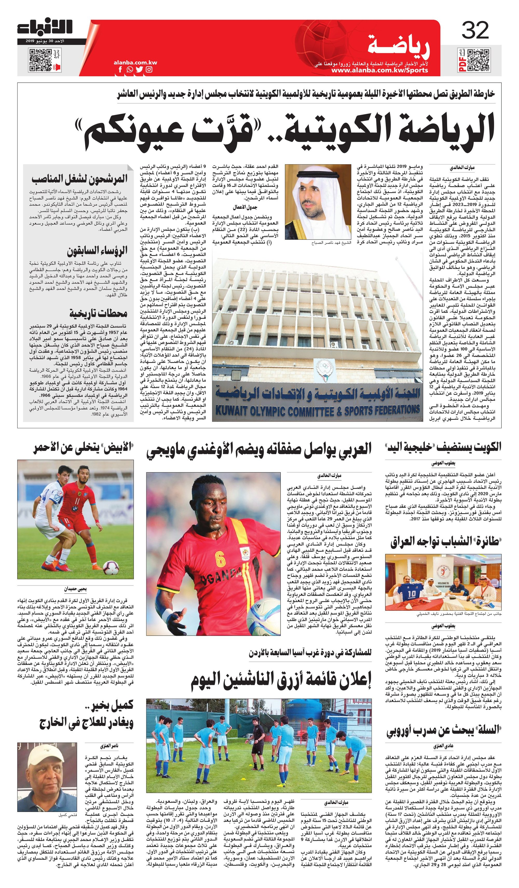

January 1958, reported in 2013 and 2019 · Newspaper pages, Al-Anba, 15 October 2013 (sports, page 30) and 30 June 2019 (sports, page 32)
Jassim Al-Qatami, first president of the Kuwait Olympic Committee
What it is
On the anniversary of the Kuwait Olympic Committee in 2013, its secretary general Obaid Al-Anzi told KUNA that the committee was founded on 29 September 1957 and announced on 15 October 1957, after Sheikh Sabah Al-Ahmad, then head of Social Affairs and Labour, approved it, and that its first meeting, in January 1958, elected its first board, «chaired by Jassim Al-Qatami». In 2019, before a new board election, Al-Anba’s «Historical milestones» repeats that the first meeting in January 1958 «elected Jassim Al-Qatami as the first president of the committee», and its list of former presidents begins with Jassim Al-Qatami, followed by Eissa Al-Hamad.
Why it matters
Names Jassim Al-Qatami as the first president of the Kuwait Olympic Committee.
Page copies


Others named
Sources
Al-Anba, 15 October 2013, page 30; Al-Anba, 30 June 2019, page 32 (Al-Anba PDF archive)
How this text was made: Both are later accounts, not records from 1957 and 1958; the 2013 account comes from the committee’s own secretary general. The Kuwait Football Association’s presidents page lists Jassim as its president from 1957 to 1961 and calls Eissa Ahmed Al-Hamad president of the first Kuwaiti Olympic council (1962 to 1969). The 1958 minutes have not been found.
Open in the interactive site